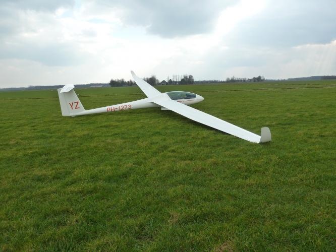

De Ls7-wl is een prestatievliegtuig dat gebruikt kan worden door zowel de solisten als de GPL-houders bij Zc Flevo. Doordat het een veelzijdig vliegtuig is, wordt de Ls7-wl zowel voor locale vluchten als voor wedstrijden en overland vluchten gebruikt.
Registratie: PH-1273
Callsign: YZ
Bouwjaar: 1992
Spanwijdte: 15 meter
Lengte: 6,66 meter
leeggewicht: 234 Kg
Overtreksnelheid: 65 Km/h
Maximum Snelheid: 270 Km/h
Beste glijgetal: 43 (Bij 105 Km/h)
Aerobatics: alle manoeuvres
| Registratie | Callsign | Bouwjaar | Spanwijdte | Lengte | leeggewicht | Overtreksnelheid | Maximum Snelheid | Beste Glijgetal | Aerobatics |
|---|---|---|---|---|---|---|---|---|---|
| pH-1273 | Yz | Onbekend | 15 Meter | 6,66 meter | 234 Kg | 65 Km/h | 270 Km/h | 43 (bij 105 Km/h) | Alle manoeuvres |